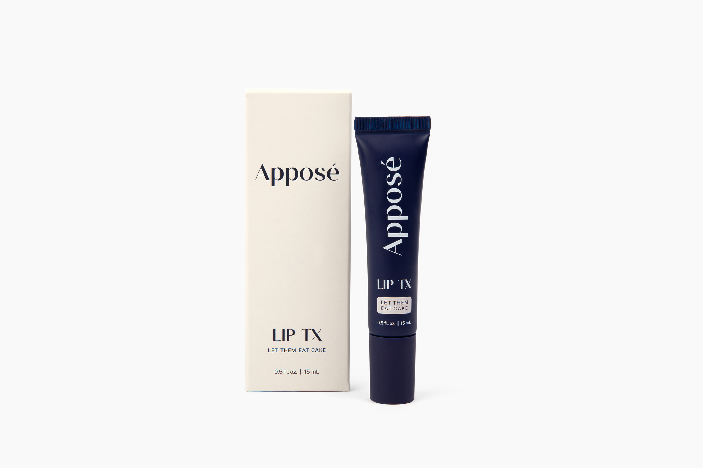

LipTX is a new formula designed to Hydrate, Repair and Protect the lips. Dermatologist tested for safety in May 2026 in an FDA-registered lab, it is packed with eleven potent anti-oxidants over seven ingredients.

"
If it doesn't solve a problem,
we don't make it.
— The Reflect Co. operating standard
We started at the end — what a lip should feel like after a full day. Hydrated. Protected. Bright. Finished. Then worked back to the shortest possible list of ingredients that would deliver each. Every ingredient in the tube has a specific role.
LipTX completed an independent, dermatologist supervised study to determine the safety of the product.
The Repeat Insult Patch Test is a controlled dermatological study measuring cumulative skin response. It is not an efficacy test; it establishes that a formulation is safe for repeated daily use across a diverse skin cohort. Additional efficacy studies are in planning.
Every ingredient in LipTX is here to do a specific job — hydrate, repair, or protect. Meet each in turn; the full antioxidant map follows.
A shea butter and polycitronellol blend that delivers Vitamins A, E, and F to soften the lip surface and lock in moisture.
A marine ferment carrying two of the most potent antioxidants in skin science — astaxanthin and fucoxanthin. The primary layer of defense against UV oxidative stress.
Cold-pressed and omega-rich, carrying natural Vitamin A, C, E, lycopene, and beta-carotene. Supports lip repair and long-term recovery.
Cholesterol esters that mirror the skin's own lipid structure. Reinforces the lip barrier and delivers a light, non-coating finish.
A traditional Chinese medicinal extract from Lithospermum root, rich in shikonin. Calms irritation and supports lip healing.
Tetrahexyldecyl ascorbate — a stable, oil-soluble Vitamin C that brightens lip tone and supports collagen without the fragility of ascorbic acid.
A bioenergizer of magnesium, zinc, and copper — cofactors your lip cells use for barrier repair and antioxidant defense.
Ranked from strongest to lightest by antioxidant potency in skin science. Each anti-oxidant is delivered by one of the seven key ingredients in the formula.
| Rank | Anti-oxidant | What it does (peer-reviewed) | Delivered by |
|---|---|---|---|
| 01 | Astaxanthin | Defends lips from UV oxidative aging; supports elasticity.1 | Sea Kelp Bioferment |
| 02 | Fucoxanthin | Second layer of UV defense for delicate lip skin.2 | Sea Kelp Bioferment |
| 03 | Tetrahexyldecyl Ascorbate (Vitamin C) | Brightens lip tone; builds collagen around the mouth.3 | T-Hexuron® |
| 04 | Lycopene | Blocks UV damage that causes lip fine lines.4 | Rosehip Seed Oil |
| 05 | Ascorbyl Palmitate (Vitamin C ester) | Delivers Vitamin C into the lip's lipid barrier.5 | Liquid Crystal |
| 06 | Beta-Carotene | Protects lips from sun stress; subtle rosy tint.6 | Rosehip Seed Oil |
| 07 | Shikonin | Calms chapping and irritation; supports lip healing.7 | Actique Skhikon |
| 08 | Tocopherol (Vitamin E) | Softens lips; locks in moisture, prevents drying.8 | CitroButter™ S |
| 09 | Vitamin A (retinol precursors) | Renews lip skin cells; keeps lips smooth.9 | CitroButter™ S |
| 10 | Copper Gluconate (SOD cofactor) | Supports collagen for lip volume and fewer lines.10 | SEPITONIC™ M3.0 |
| 11 | Zinc Gluconate (antioxidant enzyme cofactor) | Strengthens the lip barrier; speeds chapping recovery.11 | SEPITONIC™ M3.0 |
Complete INCI list, in descending order of concentration.
Petrolatum, Octyldodecanol, Microcrystalline Wax, Ricinus Communis (Castor) Seed Oil, Natural Flavor, Polycitronellol (and) Helianthus Annuus (Sunflower) Seedcake (and) Butyrospermum Parkii (Shea) Butter, Hydrogenated Polyisobutene, Lactobacillus/Kelp Ferment Filtrate (and) Porphyridium Cruentum Extract (and) Fucoxanthin (and) Astaxanthin, Rosa Canina Seed Oil, Cholesteryl Oleyl Carbonate (and) Cholesteryl Nonanoate (and) Cholesteryl Chloride, Polyglyceryl-10 Pentaoleate, Magnesium Aspartate (and) Zinc Gluconate (and) Copper Gluconate, Sorbitan Sesquioleate, Caprylic/Capric Triglyceride (and) Lithospermum Erythrorhizon Root Extract, Glyceryl Distearate, Phenyl Trimethicone, Tocopherol, Tetrahexyldecyl Ascorbate, Hippophae Rhamnoides Fruit Oil, Sodium Saccharin.
For the latest information, please refer to the tube packaging.